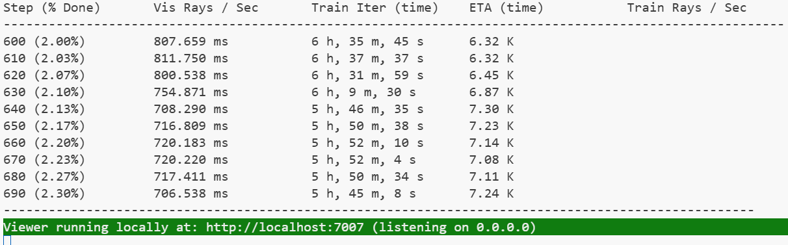

This project aims to enable real-time visualization of reconstructed 3D environments using 3D Gaussian Splatting (3DGS) within VR headsets. We investigate the full pipeline from data acquisition and incremental training to rendering inside VR.
We have made partial progress on integrating the Splatfacto workflow. We successfully launched Splatfacto on a cloud GPU instance and confirmed that it can process training data from our test scenes. However, the full connection between the incremental training loop and our real-time data stream is still in development. While we have a basic understanding of the input and output structure and training process, we are continuing to experiment with how best to automate data feeding and monitor scene updates dynamically during training.
|  |
We initially planned to reproduce and analyze an open-source Gaussian renderer for outdoor scenes, but eventually decided to drop this task. The codebase was difficult to work with due to limited documentation and complex dependencies, and its pipeline differed significantly from the Splatfacto system we are using. Given our limited time and the need to focus on core objectives—such as integrating game data, refining training results, and achieving VR rendering—we chose to reallocate our efforts accordingly.
We divide the project into two phases to achieve real-time 3DGS-based VR rendering of game scenes: